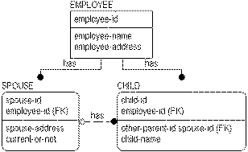

erwin� Data Modeler does not currently manage functional dependencies, but it can help to prevent second and third normal form errors. For example, if you reconstruct the examples below, you will find that once �spouse-address� is defined as an attribute of SPOUSE, you cannot also define it as an attribute of CHILD. (Again, depending on your preference for unique names.)

By preventing the multiple occurrence of foreign keys without rolenames, you are reminded to think about what the structure represents. If the same foreign key occurs twice in the same entity, there is a business question to ask: Are we recording the keys of two separate instances, or do both of the keys represent the same instance?
When the foreign keys represent different instances, separate rolenames are needed. If the two foreign keys represent the same instance, then it is very likely that there is a normalization error somewhere. A foreign key appearing twice in an entity without a rolename means that there is a redundant relationship structure in the model. When two foreign keys are assigned the same rolename, unification occurs.